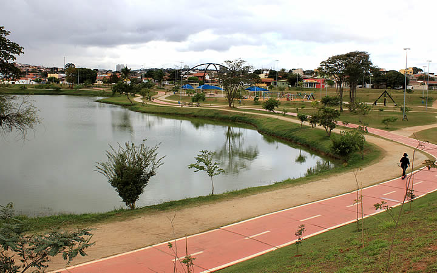

Seja bem-vindo ao SoroInfo
Qual a finalidade do site?
Este site tem a finalidade de informar as pessoas sobre vários aspectos da cidade de Sorocaba, como por exemplo: história, pontos turísticos, cultura, dados demográficos da cidade e etc. Sorocaba é uma cidade muito antiga, e sua historia se expande por mais de três séculos e hoje em dia é a quarta maior cidade do interior paulista, com 687.357 habitantes. A cidade é um importante pólo industrial do estado de São Paulo e do Brasil, sendo que sua produção industrial chega a mais de 120 países, atingindo um PIB acima dos R$ 32 bilhões, o décimo nono maior do país. As principais bases de sua economia são os setores de indústria, comércio e serviços, com mais 22 mil empresas instaladas, sendo mais de duas mil delas indústrias.
A história de Sorocaba.

A história de Sorocaba tem início em 1599. Don Francisco de Souza, governador-geral do Brasil (entre 1591 a 1602), ainda acreditando na existência de ouro, esteve na região e levantou o pelourinho " símbolo do poder real na Nova Vila de Nossa Senhora da Ponte de Mont Serrat. Em 1654, o capitão Baltazar Fernandes mudou-se para a região com a família e escravaria e fundou um povoado, ao qual deu o nome de Sorocaba que na linguagem Tupi-Guarani significa "Terra Rasgada". Sorocaba com o passar dos anos, devido a sua posição estratégica, tornou-se marco obrigatório para os Tropeiros, eixo econômico entre o Norte, o Nordeste e o Sul.
A cidade, com o fluxo de tropeiros, ganhou uma Feira de Muares, onde brasileiros de todos os Estados reuniam-se para comprar e vender animais. Novos ciclos de desenvolvimento marcaram a história de Sorocaba, incrementando a partir de 1875, com a inauguração da Estrada de Ferro Sorocabana.
Indústrias têxteis de origem inglesa instalaram-se na cidade e tornaram-na conhecida como a Manchester Paulista. Foi pelos trilhos da velha Sorocabana que chegou o progresso e logo o pequeno vilarejo desdobrou seu espaço, multiplicou sua população, passou a cidade, chegou a município e acabou investida na condição de Comarca.
O declínio da indústria têxtil fez com que a cidade buscasse novos caminhos e, a partir da década de 1970, diversificou o seu parque industrial, hoje com aproximadamente 1.500 empresas, entre elas algumas principais do país. A história de Sorocaba está presente em edifícios seculares, verdadeiras relíquias da arquitetura, como o Mosteiro de São Bento, com suas paredes de taipa; a Igreja Catedral, a Casa da Marquesa de Santos (Museu Histórico Sorocabano), o Casarão de Brigadeiro Tobias, Estação Ferroviária, entre outros.

Quais os melhores pontos túristicos?
Estes são os pontos turísticos que destacam a cidade de Sorocaba das outras cidades da região. Não deixe de visitá-los em sua ida a Sorocaba.
Palácio dos Tropeiros

Um dos locais visitados por quem está em Sorocaba é o Palácio dos Tropeiros, onde se encontra a prefeitura municipal.
O lugar foi inaugurado em 1981 e possui uma área de 145 mil metros quadrados! O Palácio dos Tropeiros leva esse nome devido a uma homenagem ao ciclo histórico do Tropeirismo na cidade.
O prédio tem 6 andares e no quinto andar há um mirante aberto ao público, bastando apenas agendar a visita.
Jardim Botânico Irmãos Vilas Boas

Jardim botânico é sempre um excelente passeio, ainda mais para os apaixonados por natureza.
No caso do Jardim Botânico Irmãos Vilas Boas, os visitantes tem uma bela surpresa ao visitar uma área que tem como objetivo valorizar a biodiversidade, o lazer e também a cultura.
Vale muito a pena conhecer cada cantinho do espaço! O roseiral, o orquidário, os lagos, o palacete de cristal com quatro tipos de jardins… todas atrações imperdíveis. Se tiver com o condicionamento físico em dia é possível até fazer trilhas.
O mirante, sem dúvidas, é visita obrigatória. Impossível ir até o Jardim Botânico de Sorocaba e não contemplar a bela vista da cidade.
Zoológico Municipal Quinzinho de Barros
O zoológico de Sorocaba é o segundo maior do Brasil em número de espécies – principalmente, aves e macacos.
Dentro do Zoológico também há o Museu Histórico Sorocabano, ou seja, dois passeios em um. Se a viagem é em família e você está em dúvida de onde levar a criançada para se divertir, certamente essa é uma boa escolha.
O Zoológico Municipal funciona de terça a domingo e feriados das 9h às 17h.
Parques de Sorocaba.

Sorocaba é conhecida por ser uma cidade com muitos parques, o que proporciona a turistas e moradores contato direto com a natureza mesmo em meio a uma grande cidade.
Entre as muitas opções, indicamos a visita aos seguintes parques:
Kasato Maru: é lá que acontecem as festividades ligadas à cultura oriental já que a temática do local é toda voltada ao Japão.
Carlos Alberto de Souza: esse é um programa muito feito pelos sorocabanos já que o parque tem uma ótima pista de caminhada.
Parque das Águas: este é o local dos grandes eventos na cidade. Além disso, possui um bom
espaço para atividades como skate, bicicleta e caminhadas. A alegria das crianças é feita com um parquinho!
Castelo Park Aquático

Por falar em crianças, há um programa que se encaixa muito bem ao roteiro do turista que visita Sorocaba: Castelo Park Aquático.
Apesar de não ficar exatamente na cidade, esse grande parque aquático – que agrada os adultos também – fica a apenas uma hora de Sorocaba, em Cesário Lange
O local oferece toda a estrutura necessária para um excelente dia de diversão: estacionamento, monitores, quiosques, restaurantes e muito mais.
Os ingressos custam R$ 79,00 e estudantes, professores da rede pública e idosos pagam meia. Se o passeio acontecer no dia do seu aniversário ou de algum acompanhante a entrada é gratuita para o aniversariante.
Atenção!
Devido a pandemia que ainda esta ocorrendo em todo o país, não é recomendado visitar estes pontos turísticos por hora. Sorocaba já registra mais de 30 mil casos confirmados de Covid-19 (dados de fevereiro de 2021), então é recomendado ficar em casa e apenas sair em caso de necessidade.
Aprecie a cidade de Sorocaba e toda a sua historia pela internet, como neste site por exemplo :) .
Fique em casa e use máscara!